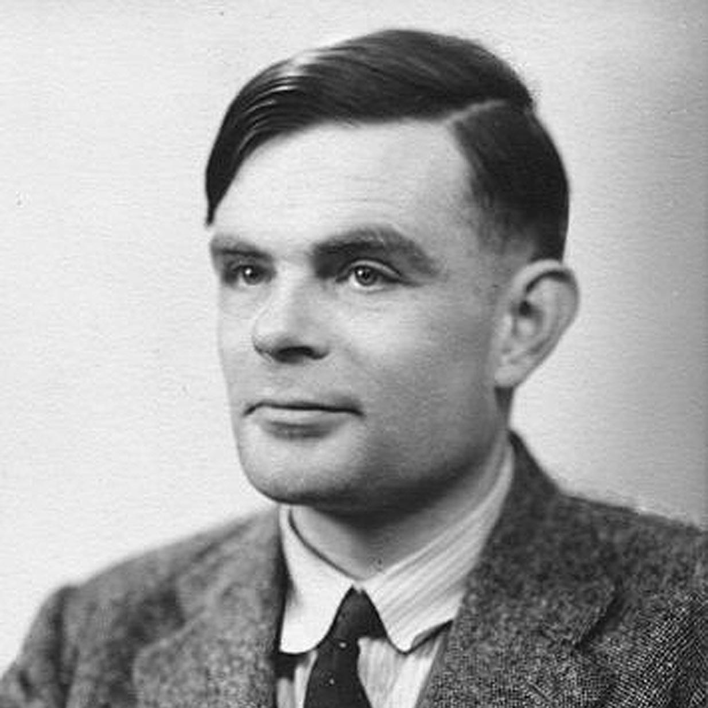

Peter Naur en de Turing Award
Home
Opdracht
Alan Turing
Turing Award
Peter Naur
Algol-60
BNF-vorm
Werken van Peter Naur
Contact
Over ons
Links & Downloads

Alan Turing
Oorlogsheld en computergenie
Peter Naur
Deense pionier in de informatica
De Opdracht
Een eigen website bouwen met HTML